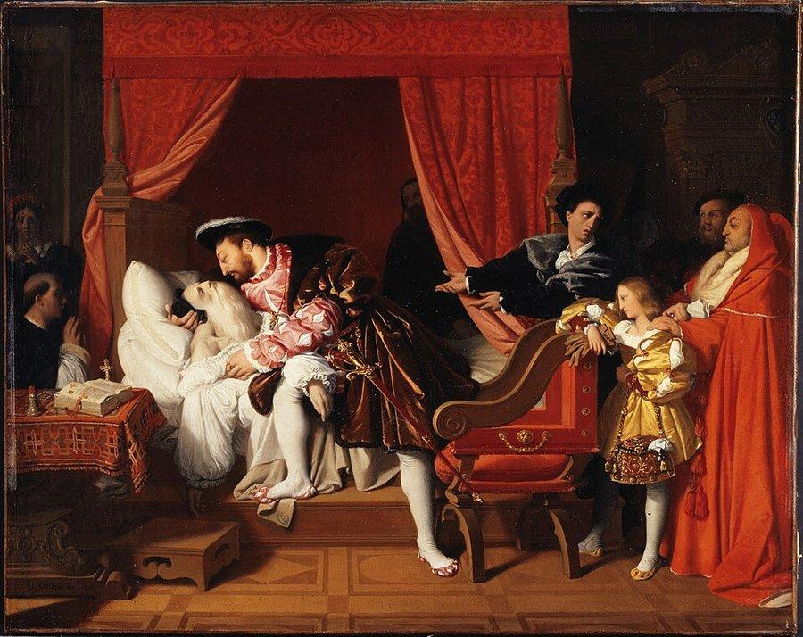
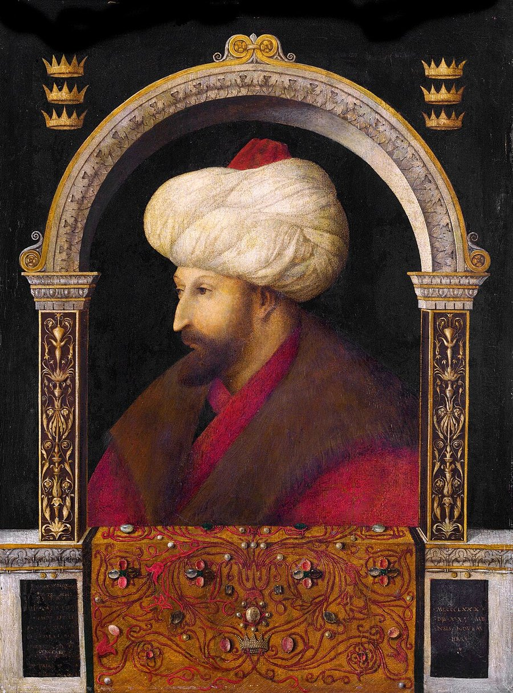
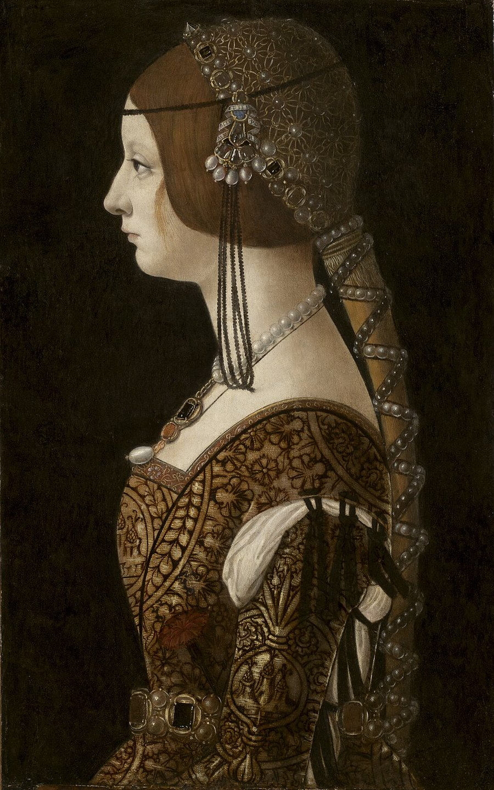
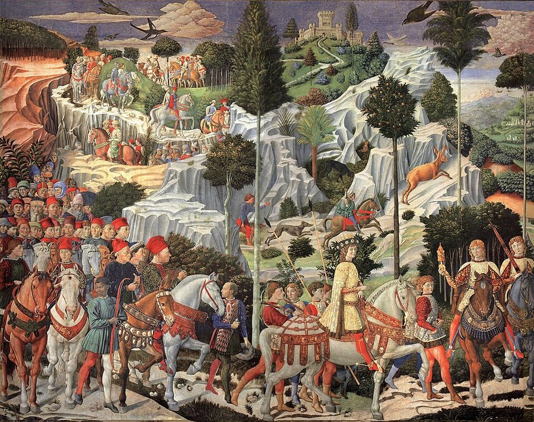
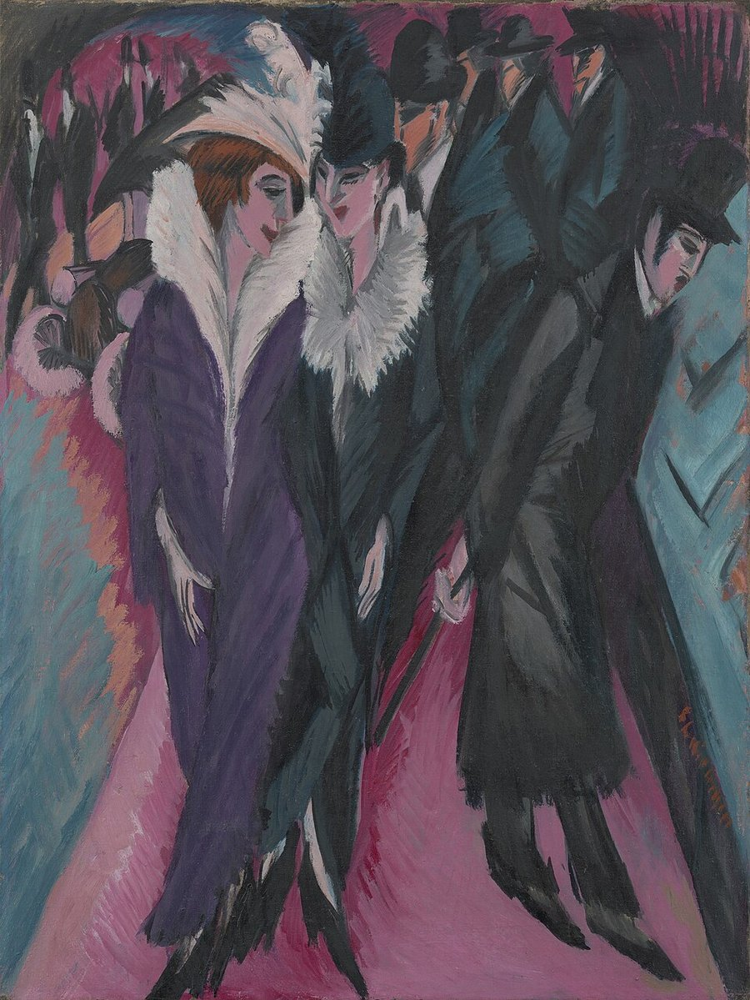
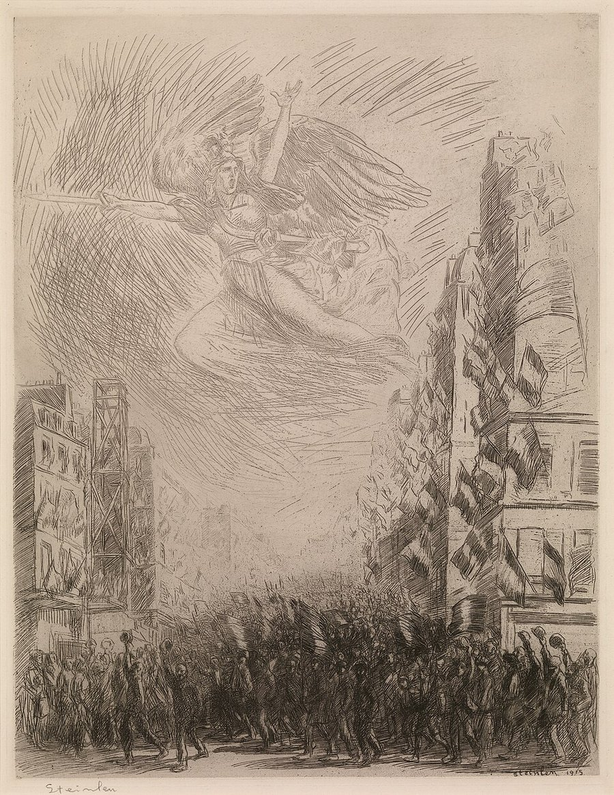

This article looks at how socio-economic conditions have shaped art, from Renaissance Florence to Nazi Germany, the Communist era and Modern Art. It asks a simple question: is art a product of society, or purely personal expression? Beyond aesthetics, art offers insight into consumer behaviour, supports a real workforce, and is often used as a political tool through propaganda. That combination is what makes it a study in Cultural Economics.
The Renaissance: Art, Wealth and Influence
The Renaissance, translated from the French word for rebirth, was a period bordering the end of the Middle Ages. True to its name, it marked a revival of art, ideas and culture. This period covered a span ranging from the 14th to the 17th century, with Florence, Italy, becoming one of its most important early centres.
Before the Renaissance, many artists worked within guild and workshop systems and were commonly regarded as artisans and workers rather than intellectual figures. Art was largely religious because the Church was a major patron. Toward the end of the Middle Ages, prominent artists increasingly gained individual fame, while new ideas and ideologies widened art beyond solely religious purposes without displacing religious art.
This period was a union of art and wealth. From a status similar to those of craftsmen and labourers, artists started being associated with luxuries. Art was commissioned to promote causes and funding art was done to showcase influence. Art became about expression and meaning rather than just a functional or commercial project. In the 15th century, as the Medici family grew in wealth in Florence, art and artists became powerful tools. These rich nobles relied heavily on art to assert influence and create a public image. Through these changes, one of the most notable cultural revolutions was budding.
Many artists who are extensively studied in contemporary times rose to fame during the Renaissance. This period is famous for its artists like Leonardo Da Vinci (1452–1519), Michelangelo (1475–1564), Sandro Botticelli (1445–1510), Raphael (1483–1520), Donatello (1386–1466) and many more. These artists were largely funded and supported by wealthy families. Art was used to portray a glorious picture of the rich. The paintings of this era depict a close relationship between the society, the royalty and the art of that era.
This study will look at multiple examples of paintings and artists of the Renaissance to understand how society shaped and influenced art during this period.
The most notable link between art and politics of the time can be seen by a painting commissioned by the French ambassador, Comte de Blacas. The painting, titled The Death of Leonardo Da Vinci, painted by the artist Jean-Auguste-Dominique Ingres, shows a dying Leonardo being cradled by the King of France, King Francis I. The nature of the art movement in politics can be interpreted through this painting and the mourning of the loss of an influential tool. This painting establishes a close relationship between power and art.

The close relationship between political society and art can be seen through Mehmet II and Gentile Bellini. After a few decades of Mehmet having conquered Constantinople, Venice, who was constantly struggling to hold back his invasion, was offered a peace treaty, and an artist was demanded to be sent to the court of Istanbul. Gentile Bellini created one of the most famous paintings of today combining the cultural influence of Europe and Islam, The Sultan Mehmet II. Not only did Bellini serve a diplomatic purpose by working in favour of Mehmet II, to maintain relations between Venice and the Ottoman Empire, his paintings also added to the power and influence of the rule of Mehmet II, by showing him as an elegant, strong and confident ruler. The portrayal of his image, in paintings made by Bellini, or recreations of his influence, was extravagant, showing the glory of the conqueror.

Women were painted extensively during this time. Women were seen as property. They were painted wearing extravagant clothes and jewellery. Parents would showcase their luxuries through their daughters. A monetary worth was attached to these daughters as brides, and these paintings also helped suitors to gain and choose an audience with women for marriage. In such paintings, parents would showcase their possessions and wealth acquired from merchants, through these portraits of their daughters.

Through the growing roots of Humanism, which boasted of the importance of people and their intellectual and artistic pursuits, an idea of secularism was born in Italy. Simple paintings that drew inspiration from the Greek and the Roman, of people as they are in their daily lives, drew a stark contrast to the earlier prevalent religious themes of divine power and devotion. People became the central theme of paintings. This can be seen in the depiction of beauty and idealisation of humans and the human form. Even the images with religious themes, such as The Last Supper by Leonardo Da Vinci, are depicted in a very human way, incorporating naturalism in the composition, emotion and perspective.

Although the Renaissance Period saw a rise in secularism as an ideology, the Catholic Church of Italy was a wealthy patron. The contributions of which can be seen through the multiple commissions of the Vatican, which was a hub for religion. Well-renowned artists like Michelangelo and Raphael adorned the halls and ceilings of churches and chapels with their work. Michelangelo's Sistine Chapel ceiling and Raphael's Stanze di Raffaello within the Vatican show a harmonious coexistence of religious patronage and artistic innovation. Even with a changing ideology and rising secularism, the church was a prominent patron of art during the Renaissance.
Thus, art in this era was shaped by society to transcend its religious purposes to include societal narratives, politics, creativity and sometimes, even to serve diplomatic services. It depicts the relationship between art, society and the intricacy of the art market.
Communist Art: Propaganda and the Power of the State
Communist theory emphasises common ownership and the aim of a classless society. In historical states such as the Soviet Union, however, political and cultural decisions were concentrated under a central party authority, and art became part of a wider state project.
Marxist ideology views art as a product of society, and not simply a reflection of it, emphasising its functional role in shaping beliefs. In this context, art and literature serve a purpose in conveying and instilling certain ideologies. The use of art was twofold, one to undermine the capitalist and the other to glorify the communist. Artwork under this ideology was never seen as an end product in itself, it was simply a tool to achieve a common ideal.
Specifically, within the Marxist framework, art is utilised to create a critical perspective on Capitalism, portraying its negative facets to remind and persuade the masses. Through this negative image, artists aim to advocate for the acceptance and adoption of Communist ideology. Thus, within Marxist thought, art becomes a powerful tool for influencing societal perceptions and fostering a collective consciousness aligned with the ideals of Communism.
To reinforce the principles of a Communist society, it was also crucial to highlight its numerous advantages. Pro-communist artworks were created to present a positive vision of a society governed by Communist ideals. These creations aimed to evoke sentiments associated with collective strength and nationalism, influencing the masses. Such artworks played a significant role in shaping a positive perception of a Communist society and its inherent values.
Under Communist rule, art became a slave to the State. Prestige and wealth were bestowed only on the artists who successfully adapted to the changing ideologies of the ruling government. Revolutionary woodblock printing became an influential and inexpensive medium for political communication in China, although traditional artistic forms did not simply disappear. Artworks and illustrations became political tools.
When the Bolsheviks came to power, illiteracy remained widespread in parts of the former Russian Empire. Thus, posters and easily understood images became an important way of spreading propaganda and messages across a population of varied literacy levels, even as the Soviet state pursued mass literacy campaigns. These artworks were strategically placed in public spaces, making them accessible to a broad audience. Ideas of artistic freedom varied significantly under Soviet rule. Freedom meant an opportunity to advance their contribution to the society.
The influence of art was well-known to the government and controlling the messages became important. Even artists were required to realise their function towards the communist society. The function of art in the Soviet Union was to spread a message, particularly in an easy-to-understand way. Socialist Realism was the norm in the Soviet Union. Artists were expected to create artworks close to life, hence the realism aspect of it. But the catch here lay in the demand of the state for these realistic images to only mirror the positives, hence the name Socialist Realism. Even if negatives were to be presented, they should not criticise the State, but rather state it as a leader working against all odds and obstacles. In this setting, an artist lost their freedom to express and paint their experiences and perspectives, in order to achieve the societal goal set by the State. But this did not necessarily mean that all artists were unhappy to create such pieces: while some lost their creative freedom, others were more than happy to do their duty towards the State.
Anti-German sentiments were also spread in the Soviet Union through art during World War II. Artworks mocked and negatively highlighted the Germans, while at the same time showing the courage and bravery of the Russians. Germans were often shown as invaders and tyrants. Caricatures of German leaders, such as Adolf Hitler, emphasised their cruelty.
Hence, it is evident that Communist governments used art to shape cultural narratives and influence economic perspectives. Studying this dynamic helps understand the significant role art plays in controlling and transforming societies, highlighting its impact on cultural ideologies.
Nazi Germany: Controlling Art and Ideology
The extremist ideas surrounding purity of race and origin, accompanied by an assertion of power and influence, paved the way for the Nazi Period (1933–1945) in Germany under the rule of Adolf Hitler.
Hitler had unsuccessfully pursued an artistic career in his youth. Under his regime, aesthetic preference became state policy, and the government worked to control the messages and ideals that could be spread through art.
The Nazi ideas of a pure race gave rise to the concept of an "Aryan Race." Hitler considered it to be the purest and the most superior race and employed many means (some very infamously inhumane) to preserve this purity and the ideas surrounding it. These methods also included propaganda through artworks and illustrations. One party election poster from 1930 depicted the sword of the Nazi party striking down a snake representing the ideas that went against Nazi ideology, spelled out in the text emerging from the snake's body.
Two art exhibitions were set up in Munich in 1937. It divided art into two types. The type of art that was accepted by the Nazi ideology was termed "Aryan Art" and the type of art that was not accepted by this ideology was termed "Degenerate Art."
The exhibition for the "Aryan Art" (the Große Deutsche Kunstausstellung, or "Great German Art Exhibition") held works that were accepted by Adolf Hitler and were seen as representations of ideal beauty through the multiple statues it showed. Classical and traditional styles were accepted and rewarded. Paintings and sculptures were made with accurate and ideal proportions, depicting real life. Such works were appreciated and rewarded. These works included sculptures by artists like Arno Breker.
Expressionism in art was not tolerated. Germany in 1937 saw a shift in the work and display of art. Many people lost their jobs as curators, gallery owners and artists. Jewish artists, regardless of their art style, were persecuted. Anyone who worked with expressionist, surreal or abstract designs faced backlash. This also included people who promoted anti-Nazi ideas or brought to notice any negative aspect of the Nazi society. Artists excluded from the Reich Chamber of Culture could be prevented from exhibiting or selling their work professionally, while Jewish artists and political opponents faced escalating persecution far beyond artistic censorship.
The norm to suppress unwanted art has always been censorship, punishments and restrictions. But Nazi Germany also found another way: rather than hiding unwanted art, it was publicly showcased in an exhibition in Munich, and the masses were invited to mock these works. This served the psychological purpose of stripping the artists of their credibility and pride, implying that such art was a product of an unsound mind, thus destroying the art and the message at its roots. These included works of painters such as Ernst Ludwig Kirchner (1880–1938), Oskar Kokoschka (1886–1980), Paul Klee (1879–1940) and Käthe Kollwitz (1867–1945).

The study of this period shows how art was used to control an ideology and promote only the ideas and styles that suited the Nazi ideals. It showcased how unwanted art was curbed not simply through brute force, but through psychological manipulation.
Modern Art: War, Rebellion and Expression
The Modern Art movement developed through overlapping movements in the late 19th and early 20th centuries, with Paris serving as one of its principal centres. Art moved away from conventional realism toward more experimental and abstract depictions, often in rebellion against traditional methods. It rejected the styles that had been established as an ideal, thus questioning the established norms of society. This era was largely affected by wars and political disturbances. These, along with the growing ideas that came with industrialisation and advancements in psychology (mainly Freudian psychoanalysis), paved the way for new ideas and inspiration surrounding art.
Away from the propaganda and the government's function of art, artists started painting to express themselves. During World War I, art depicted the chaotic, dynamic energy of the war, and such emotions were expressed through modernist methods. These emotions ranged from the powerful feeling of nationalism to the outrage caused by the war and its consequent effects. Promotion of such modern works was largely done by people like Paul Cassirer (1871–1926), who was a pioneer in promoting artists like Vincent Van Gogh (1853–1890).

Dadaism, an avant-garde art movement, emerged during World War I in Zurich, Switzerland. The origin of the name "Dada" remains disputed; the word has several possible associations, an ambiguity appropriate for a movement that embraced absurdity and rejected conventional artistic logic. Due to the war, Switzerland had become a haven for fleeing artists. Cabaret Voltaire in Zurich (opened by Emmy Hennings and Hugo Ball) was the meeting point for these artists to discuss their ideas and views. Experimental ideas started surfacing as artists grew tired of the wars caused and started straying away from the established ideologies of society as a protest against the war. Marcel Duchamp (1887–1968), famous for his "Readymades" collection, was one of the pioneers of the newly emerging concept of Anti-Art, a term representing the rejection of traditional and conventional methods. Duchamp and other like-minded artists started questioning the standards that were established for art, dictating how it should look and how it should be created. Duchamp expressed ideas and did not simply rely on the visual aesthetics of his works. By selecting ordinary manufactured objects and presenting them as art, he shifted attention from craftsmanship and beauty toward choice, context and artistic authorship. His creations raised the question of the very definition of art.
After the war, artists adopted calmer themes and an attempt was made to go back to traditional styles. This was marked by the "Return to Order" movement. Artists after the war looked for and sought after stability, and this could be seen through their works.
The art during the Modern Art era is one of the best cases of political influence on art. It depicts how societal turmoil can result in drastic changes in how art is made and perceived.
Art as Activism in Contemporary Society
Visual presentation can shape attention, interpretation and emotional response. Images often communicate more quickly than extended text, while colour, scale, framing and context influence which information people notice and how they understand it.
Art or visuals in such a way can also be used to influence behaviour. It can help reinforce rules that otherwise fail. An example, as given by the book Nudge (Richard Thaler and Cass Sunstein): as simple a decision as increasing the density and proximity of the lines on the road at a dangerous turn, on Lake Shore Drive in Chicago, was more effective in reducing the speed of vehicles than a sign that warned them of the danger. These smaller lines in that particular area created an illusion of speed, nudging drivers to slow down.
Such instances of art affecting or altering behaviour can also be seen through the works of Olafur Eliasson, a viewer experience-based artist, known for his sculptures and installations. The ways people interact with his creations is an insight into the relationship between art and emotion. He talks about the importance of experience in understanding. In one of his famous installations, Ice Watch, large chunks of ice were placed in public, across sites in Copenhagen, Paris, and London (including near St Paul's Cathedral and outside Tate Modern), and people were left to see and interact with them. The physical encounter turned abstract climate data into an immediate and tangible experience. Thus, Eliasson lays an emphasis on making the data into something emotional and tangible, particularly when it comes to issues such as global warming.
All of this makes art a powerful tool, and throughout history leaders have understood the influence that it holds. Through various periods and social upheavals, there has been a constant attempt to control art and to utilise it to spread propaganda deemed acceptable.
Conclusion: Art as Reflection and Influence
In conclusion, a dynamic interplay is revealed through the study of art through varied socio-economic lenses. This interplay shows the relationship between societal influences, political ideologies and personal expressions. Art changed forms and purpose many times, from the union of art and wealth in the Renaissance, to the propaganda art of the Communist Era, to the ideological control of art by the Nazi regime, and finally to the protest against established norms through Modern Art. Each period shows a unique relationship between art and society.
Art today is seen in many forms, some true to its traditional rules and roots and some showing various aspects of contemporary ideas and ideologies. Whether it stays true to convention or gets infused with innovation, the influence of society on art and the impressions that art leaves behind remains undeniable.